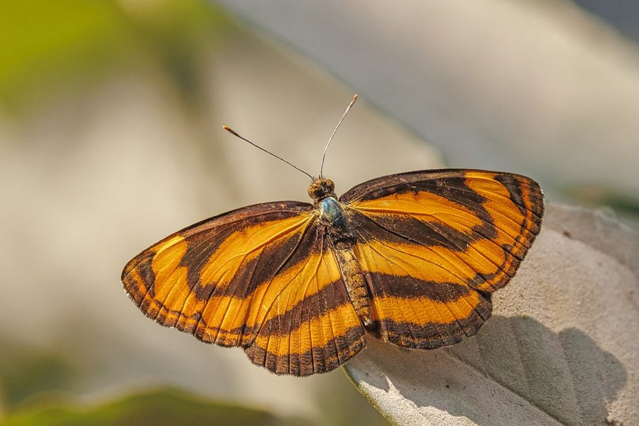

कॉमन लस्कर तितलीCommon Lascar
Pantoporia hordonia · Nymphalidae · INS-0187

- Scientific name वैज्ञानिक नाम
- Pantoporia hordonia (Stoll, 1790)
- Family कुल
- Nymphalidae
- Hindi हिंदी
- कॉमन लस्कर तितली
- Local names स्थानीय नाम
- common lascar, lascar titli, common laskar titli, chhota lascar
- Status here यहाँ की स्थिति
- native
- Movement आवागमन
- Resident, here all year
- Known from कहाँ दर्ज
- Others have published records from the wider Awadh–Purvanchal plain, none yet from Basti–Ayodhya अवध–पूर्वांचल से दूसरों के प्रकाशित अभिलेख, बस्ती–अयोध्या से अभी नहीं
- IUCN IUCN
- not evaluated
- Review समीक्षा
- not yet reviewed
When to look कब देखें
Present all year. साल भर मौजूद।
Uses and possibilities उपयोग और संभावनाएँ
Drawn from the documented uses in the profile below, where each is labelled traditional, current or a research lead. All uses →
Tell it apart from इनसे अलग पहचानें
कॉमन लस्कर तितली / Common Lascar
Pantoporia hordonia (Stoll, 1790) — Nymphalidae
कॉमन लस्कर तितली — बबूल और सिरिस के पेड़ों के आसपास उड़ने वाली नारंगी और गहरे भूरे रंग की एक फुर्तीली तितली है। इसके पंखों पर चौड़ी नारंगी पट्टियाँ होती हैं और यह अपने पंखों को सीधा फैलाकर हवा में तैरने के अंदाज में उड़ती है। यह धूप खिली सुबह में पत्तियों पर बैठकर धूप सेकती है और पेड़ों के स्राव तथा नम मिट्टी से रस चूसती है। इसके कैटरपिलर बबूल की पत्तियों पर पलते हैं।
Quick Identification त्वरित पहचान
| Feature | Description |
|---|---|
| Size | Medium-sized nymphalid; wingspan 40–50 mm (Kehimkar 2008) |
| Upperside Colour | Dark fuscous brown crossed by rich orange-yellow bands (Wynter-Blyth 1957) |
| Forewing Pattern | Orange cell streak and two broad postdiscal orange bands (Evans 1932) |
| Hindwing Pattern | Broad subbasal orange band and narrower postdiscal line (Bingham 1905) |
| Underside Pattern | Variegated ochraceous and purplish-grey with fine wavy lines (Kehimkar 2008) |
| Flight Style | Gliding, sailing flight with wings held flat horizontally (Kunte 2000) |
| Perch Habit | Basks on upper foliage of acacia trees with wings fully spread (Wynter-Blyth 1957) |
Field tip: Look around sunny tree crowns of babool and siris along canal banks and grove borders. Its bright orange bands and habitual stiff-winged sailing flight between tree branches readily separate it from the white-banded sailers.
हिंदी: बबूल और सिरिस के पेड़ों पर पंख फैलाकर बैठने वाली यह नारंगी-काली तितली हवा में बिना पंख हिलाए तैरती हुई सी उड़ती है।
Morphology आकारिकी
Biometrics recorded from adult specimens (Kehimkar 2008; Evans 1932):
| Measurement | Range | Source |
|---|---|---|
| Wingspan | 40–50 mm | Kehimkar (2008) |
Adult description: The Common Lascar is a distinctively banded nymphalid butterfly displaying subtle dry-season and wet-season variation (Bingham 1905). In the wet-season brood, the ground colour of the upperside is deep brownish-black, against which the orange-yellow bands appear intense and sharply demarcated (Evans 1932). In the dry-season brood, the ground colour fades to warm sepia brown, and the orange markings broaden slightly (Wynter-Blyth 1957).
On the forewing upperside, a continuous longitudinal orange discoidal streak extends from the wing base along the cell, followed by a separate triangular spot beyond the cell apex (Bingham 1905). An oblique discal band of three large orange spots runs from the dorsum toward the costa, accompanied by an outer submarginal band of smaller orange lunules (Kehimkar 2008). The hindwing upperside carries a very broad subbasal orange band and an outer, slightly curved postdiscal band (Bingham 1905).
The underside exhibits a striking cryptically marbled pattern of ochreous yellow, purplish-brown, and silver-grey transverse bands and wavy striations (Kehimkar 2008). Antennae are slender, dark brown, and tipped with pale ochreous clubs; eyes are smooth and prominent (Bingham 1905).
Larval Stage इल्ली अवस्था
The full-grown caterpillar is cylindrical, dark brown or reddish-grey, adorned with several pairs of branched, fleshy subdorsal spines along the abdominal segments (Kunte 2000). The head carries two short lateral horns. The pupa is pale brown or greenish with metallic golden spots and irregular dorsal projections, suspended by the cremaster from the underside of a host twig (Kunte 2000).
हिंदी: इसका शरीर मजबूत और पंखों का फैलाव 40 से 50 मिमी होता है। ऊपरी पंख गहरे कत्थई होते हैं जिन पर गाढ़ी नारंगी धारियाँ होती हैं। इसकी इल्ली भूरी और काँटेदार होती है।
Behaviour & Ecology व्यवहार और पारिस्थितिकी
The Common Lascar is an agile, sun-loving butterfly typical of open deciduous woodland, scrub jungle, and riverine acacia tracts (Kehimkar 2008). Adults spend considerable time in the sub-canopy, perching on sunlit leaves two to four metres above the ground (Kunte 2000). They exhibit an unmistakable flight dynamic: several rapid, flicking wingbeats followed by a long, graceful glide during which the wings are held perfectly flat (Wynter-Blyth 1957).
Territorial males establish regular perches on protruding branches of Acacia or Albizia trees, flying out to intercept intruding butterflies before returning to the exact same leaf (Kehimkar 2008). During the warm midday hours, adults descend to damp sand along streams, village ponds, and leaking irrigation pipes to suck mineral-rich water (Kunte 2000). They are also strongly drawn to oozing tree sap, fermenting fruit, and animal excrement (Kehimkar 2008).
हिंदी: यह तितली धूप सेकने के लिए पेड़ों की ऊँची डालियों पर बैठती है। उड़ते समय यह पंखों को सपाट फैलाकर हवा में तैरती है और दोपहर में गीली मिट्टी पर पानी पीने उतरती है।
Life Cycle / Phenology जीवन चक्र
Seasonal phenology in northern Indian plains across the agricultural calendar (Kunte 2000; Kehimkar 2008):
| Season / Month | Stage | Field Observation |
|---|---|---|
| July–August (Kharif monsoon) | Egg & Larva | Females lay eggs on fresh shoots of acacia and siris (Kunte 2000) |
| September–November (Post-monsoon) | Adult peak | Maximum abundance of sailing adults along wooded borders (Kehimkar 2008) |
| December–January (Rabi winter) | Larva & Pupa | Overwintering occurs mainly in late larval and pupal stages |
| February–March (Spring / Zaid) | Adult emergence | Dry-season adults emerge with paler sepia ground colour (Wynter-Blyth 1957) |
| April–June (Summer pre-monsoon) | Adult & Egg | Active near river channels and irrigated orchards (Kunte 2000) |
The female deposits dome-shaped, intricately sculptured eggs singly on the tender leaves of host trees (Kunte 2000). The egg hatches in a few days. The young larva chews down the leaf midrib, using silk and fecal pellets to create a small protective perch where it rests between feeding bouts (Kunte 2000). Larval development requires a few weeks, and the pupal phase lasts about a week to ten days before adult eclosion. Several generations succeed each other throughout the year.
हिंदी: बरसात के समय मादा बबूल की कोमल पत्तियों पर अंडे देती है। इल्ली पत्तियों को खाकर कुछ हफ्तों में बड़ी होती है और साल भर में इसकी कई पीढ़ियाँ तैयार होती हैं।
Host Plants or Prey आहार
Documented larval host plants from published Indian lepidopteran accounts (Kunte 2000; Kehimkar 2008):
- Acacia nilotica (Babool, family Fabaceae) — major food plant in northern dry deciduous forests and village lands (Kunte 2000).
- Albizia lebbeck (Siris, family Fabaceae) — widely planted shade and timber tree supporting large broods (Kehimkar 2008).
- Senegalia catechu (Khair, family Fabaceae) — native thorn scrub tree heavily utilized in ravine and scrub tracts.
- Senegalia rugata (Shikakai, family Fabaceae) — climbing acacia of forest edges and thickets (Kunte 2000).
Adults rarely visit small flowers, preferring instead to feed on the sap leaking from damaged tree bark, overripe fallen fruits, and moisture from wet river sand (Kehimkar 2008).
हिंदी: इसकी इल्लियाँ बबूल, सिरिस और खैर के पेड़ों की पत्तियां खाती हैं। वयस्क तितलियाँ फूलों की जगह सड़े हुए फलों और पेड़ों के रस पर बैठना अधिक पसंद करती हैं।
Predators / Natural Enemies शत्रु
Common insectivorous predators of the Gangetic plain likely to take immature and adult stages:
- Birds: Insectivorous birds of woodland edges, such as drongos, bee-eaters, and treepies, hawk sailing adults from exposed perches.
- Spiders: Giant wood spiders and orb-weaving spiders (Neoscona and Argiope) frequently snare low-gliding adults in woodland clearings.
- Insects: Praying mantises capture resting adults; predatory pentatomid shield bugs suck juices from feeding caterpillars.
- Parasitoids: Tachinid flies and ichneumonid wasps heavily parasitise the spiny caterpillars.
हिंदी: गिरगिट, शिकारी मकड़ियाँ और भुजंगा व पपीहा जैसी चिड़ियाँ इस तितली को खाती हैं। इसकी इल्लियों पर परजीवी मक्खियाँ हमला करती हैं।
Agricultural / Human Relevance कृषि प्रासंगिकता
Economic status: The Common Lascar causes no measurable injury to agricultural crops, agroforestry, or commercial timber stands (Kunte 2000). While its larvae feed on the foliage of Acacia nilotica (Babool) and Albizia lebbeck (Siris), the feeding is scattered among vast mature tree crowns and never leads to noticeable defoliation or stunted growth.
Ecological significance: As a native herbivore specialized on leguminous trees, it forms an integral part of the canopy food web, converting tree biomass into prey for insectivorous woodland birds (Kehimkar 2008).
Traditional: No traditional medicinal, ritual, or economic applications are recorded.
Today: Valued in nature education as a prominent representative of the gliding nymphalid butterflies of rural woodlands.
Research direction (a lead, not a result): Exploring whether variation in secondary tannin chemistry among wild acacias regulates caterpillar survival and parasitoid attack rates.
हिंदी: यह तितली बबूल और सिरिस के पेड़ों पर रहती है लेकिन फसलों या बागों को कोई नुकसान नहीं पहुँचाती। यह जंगलों और बगीचों के पारिस्थितिक तंत्र का महत्वपूर्ण अंग है।
Expected Locally स्थानीय रूप से अपेक्षित
Not a field record. Written from published accounts for eastern Uttar Pradesh. No confirmed local sighting yet — if you have seen it, that is what the atlas needs.
अभी तक स्थानीय पुष्टि नहीं। यह विवरण प्रकाशित स्रोतों से है, किसी अवलोकन से नहीं।
The Common Lascar is expected throughout eastern Uttar Pradesh in open scrub woodlands, along canal banks lined with babool and siris, and in mature village groves. Look for individuals gliding with flat wings between tree crowns or mud-puddling on wet sand near irrigation ditches from August to November. GBIF holds published records from the wider Awadh–Purvanchal plain, none yet from Basti–Ayodhya. A photograph with date and location, submitted through the About page, would confirm the first local documentation for the district.
Distribution वितरण
Global range: Widespread across the Indo-Malayan realm, including India, Nepal, Bhutan, Bangladesh, Sri Lanka, Myanmar, Thailand, Indochina, southern China, Peninsular Malaysia, and the Indonesian archipelago (Bingham 1905).
In India: Found across peninsular India, the Western Ghats, central India, the lower Himalayas up to moderate elevations, and across the northern plains to Assam and the Northeast (Evans 1932; Kehimkar 2008).
In Uttar Pradesh: Distributed across the state in deciduous forest tracts, riverine acacia forests, and countryside with mature tree cover.
In Basti district / eastern UP: Expected as a resident breeding species wherever extensive stands of babool, siris, and khair occur along waterways and village boundaries.
हिंदी: यह तितली पूरे भारत और दक्षिण-पूर्व एशिया में पाई जाती है। उत्तर प्रदेश में जहाँ भी बबूल और सिरिस के पेड़ होते हैं, वहाँ यह आसानी से मिलती है।
Research Questions शोध प्रश्न
- What percentage of Common Lascar larvae on Acacia nilotica are successfully parasitised by tachinid flies in village groves?
- How does the abundance of the Common Lascar respond to seasonal leaf flushes in babool trees across eastern Uttar Pradesh? / बबूल की नई पत्तियां आने पर इस तितली की संख्या में क्या बदलाव आता है?
- Can local observers track whether adults prefer rotting fruit baits over flower nectar in orchard surveys? / क्या यह तितली फूलों के बजाय सड़े हुए फलों पर अधिक आकर्षित होती है?
- What microclimatic factors determine the choice of mud-puddling sites along irrigation channels?
- Does the species breed continuously through the winter months or enter a partial reproductive diapause?
Similar Species मिलती-जुलती प्रजातियाँ
| Species | How to tell apart | हिंदी | |
|---|---|---|---|
| Neptis hylas ([[common_sailer\ | Common Sailer]]) | Bands across upperside wings are pure chalky white instead of rich orange-yellow | कॉमन सेलर — सफेद पट्टियाँ |
| Moduza procris ([[commander\ | Commander]]) | Distinctly larger; rich chestnut-red ground colour with bold white discal band | कमांडर — लाल-सफेद पंख |
| Phalanta phalantha ([[common_leopard\ | Common Leopard]]) | Bright tawny yellow upperside marked with scattered black spots rather than horizontal bands | कॉमन लेपर्ड — चित्तीदार पंख |
Field rule: A medium-sized butterfly gliding with flat wings around acacia and siris trees, marked with rich orange-yellow horizontal bands on dark brown upperside, is the Common Lascar.
हिंदी: कॉमन सेलर तितली पर सफेद पट्टियाँ होती हैं, जबकि कॉमन लस्कर पर चटक नारंगी-पीली पट्टियाँ साफ दिखाई देती हैं।
Taxonomy & Classification वर्गीकरण
Original description. Described by Caspar Stoll in [1790] as Papilio hordonia in Cramer, Aanhangsel van het Werk de Uitlandsche Kapellen, page 149, plate 33, figures 4, 4D. Type locality given as "Kust van Guine" in error; corrected to Bengal, India.
Subspecies. Several geographic subspecies are recognized across tropical Asia. The population occurring across mainland India and the Gangetic plain is the nominotypical subspecies Pantoporia hordonia hordonia (Stoll, 1790).
Family and order placement. Order Lepidoptera, family Nymphalidae, subfamily Limenitidinae, tribe Neptini. The genus Pantoporia Hübner, 1819, comprises small to medium-sized lascars closely related to Neptis.
Phylogenetic notes. Pantoporia is distinguished from the true sailers (Neptis) by differences in wing venation, male secondary sexual characters, and the characteristic orange ground pattern of the upperside (Bingham 1905).
IUCN status rationale. Not evaluated (NE) on the IUCN Red List of Threatened Species. It is an abundant, widespread resident across South Asia with no significant habitat fragmentation threats.
हिंदी: इसका वैज्ञानिक नाम Pantoporia hordonia है। यह Nymphalidae परिवार की सदस्य है और इसे प्रकृति में सुरक्षित माना गया है।
Photo Gallery फोटो गैलरी
No photos yet — add field photos to media/species/common_lascar/ and run node scripts/sync_photos.js.
Photos needed आवश्यक फोटो
- [ ] Adult basking with wings spread flat on acacia leaf (बबूल की पत्ती पर पंख फैलाकर बैठी तितली)
- [ ] Underside showing cryptically variegated ochreous markings (पंखों के नीचे की चित्तीदार बनावट)
- [ ] Caterpillar feeding on babool foliage (बबूल की पत्तियों पर चरती इल्ली)
- [ ] Adult mud-puddling on damp ditch soil (नाली के किनारे गीली मिट्टी पर पानी पीती तितली)
References संदर्भ
- Stoll, C. (1790). In Cramer, P., Aanhangsel van het Werk de Uitlandsche Kapellen. S. J. Baalde, Amsterdam, p. 149, pl. 33, figs. 4, 4D.
- Bingham, C. T. (1905). The Fauna of British India, Including Ceylon and Burma. Butterflies, Vol. 1. Taylor and Francis, London, pp. 344–346.
- Evans, W. H. (1932). The Identification of Indian Butterflies. 2nd edition. Bombay Natural History Society, Mumbai, p. 167.
- Wynter-Blyth, M. A. (1957). Butterflies of the Indian Region. Bombay Natural History Society, Mumbai, pp. 190–191.
- Kehimkar, I. (2008). The Book of Indian Butterflies. Bombay Natural History Society and Oxford University Press, Mumbai, p. 396.
- Kunte, K. (2000). Butterflies of Peninsular India. Universities Press, Hyderabad, pp. 132–134.
- Varshney, R. K. & Smetacek, P. (2015). A Synoptic Catalogue of the Butterflies of India. Butterfly Research Centre, Bhimtal and Indinov Publishing, New Delhi, p. 199.
- GBIF Occurrence Data — Pantoporia hordonia, India (2025).
Source file: species/fauna/insects/common_lascar.md